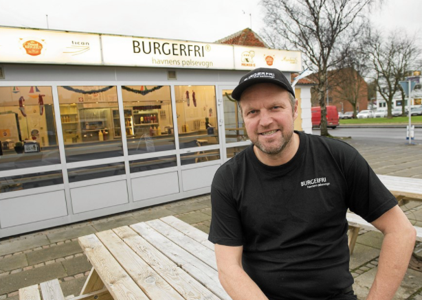

Vi venter på dig!
Kom og mød BURGERFRI på havnen og få en værdifuld pause

Siddepladser

så kom, tag en pause og en pølse
Velkommen til BURGERFRI - Havnens Pølsevogn.
Vi er byens lokale pølsevogn og stedet med kvalitetsråvarer fra lokalsamfundet og uhøjtidelige samtaler.
Vores priser er billige, så alle kan komme ned og nyde en god stor saftig pølse.
I 1988 fik Svend Christoffersen drømmen om at blive pølsemand opfyldt. Der har været pølsevogn overfor Toldbodgade i 46 år. Svend er blot den tredje pølsemand i forretningen, der startede med en vogn hvor kunderne stod ude under et halvtag. Ejeren før
Svend fik en “vogn”, hvor kunderne kunne kom ind. I 1996 blev den nuværende vogn købt. Vognen, der nok bedre kan betegnes som en stor kiosk med et fast fundament, er tre gange blevet flyttet. Sidste gang var, da rundkørslerne på Thisted
Havn blev etableret.
Navnet fik Svend, da McDonald's i 1997 etablerede sig som nærmeste nabo på havnen i Thisted. Han havde ikke lyst til at blive kaldt MacSvend, og det var først en vittighed og en hurtig bemærkning om at være “burgerfri,” og
fik navnet registreret.
For Svend Christoffersen var det en drøm at blive selvstændig, og selvstændig pølsemand. Drømmen er gået i opfyldelse. I mere end 27 år har Svend langet pølser og brød over disken i pølsevognen på havnen i Thisted. Han havde
den eneste “rene” pølsevogn mellem Aalborg og Holstebro.
30. maj 2016 var der åbent afskedsarrangement for alle, der vil have en sidste pølse langet over disken af Svend Christoffersen. 1. juni overtog pølsevognen de nye ejere er Jan Kristensen og Henrik Sørensen, der sammen ejer
Restaurant Bryggen.
Siden sommeren 2016 har Jan og Henrik langet pølser over disken i stor stil! Den samme “pølse ånd” er blevet ført videre i stor stil siden Svend gik på pension.
Den lokale pølse-pusher er at finde hver dag fra morgenen og et stykke op af dagen i pølsevognen. Menuen forbliver uændret. Dog har Jan sammen med Tican, besluttet at teste, om kunderne kan lide hot-dogs i specialudgaver.
Nu står den på "skoldede fra bassinet" og "indianer med sidevogn" eller blandt andet i en jule model med rødkål og senere en mexicansk udgave. Og kunderne elsker det. Den danske røde pølse er stadig et populært måltid på farten.
Kom og mød BURGERFRI på havnen og få en værdifuld pause